<!DOCTYPE html>
<html>
  <head>
    <meta charset="utf-8" />
    <meta
      name="viewport"
      content="width=device-width, initial-scale=1, maximum-scale=1, user-scalable=no"
    />
    <meta
      name="google-site-verification"
      content="cqX0KLojFnp_XLPXVqGxw_qUBybbxjMzqRSEKTh1NaI"
    />
    <!-- If containe conver than set og:image -->
    
    <meta name="og:image" content="https://i.imgur.com/OpmuH8U.png" />
     
    <title>Squarelive 轉蛋遊戲製作心得 | MurabitoB&#39;Blog</title>

    <meta
      name="description"
      content="在2023年的6月，我製作了一款可以把觀眾的 SuperChat、綠界贊助轉換成實況主抽卡的石頭的小遊戲..."
    />
    <meta name="keywords" content="" />

    

    <meta property="og:locale" content="zh-TW" />
    <meta property="og:type" content="article" />
    <meta property="og:title" content= "Squarelive 轉蛋遊戲製作心得 | MurabitoB&#39;Blog"  />
    <meta property="og:description" content= "在2023年的6月，我製作了一款可以把觀眾的 SuperChat、綠界贊助轉換成實況主抽卡的石頭的小遊戲..." />
    <meta property="og:url" content="https://murabitob.github.io/post/2023-07-06-vt-gacha.html" />
    <meta property="og:site_name" content="" />
    <meta property="article:author" content="MurabitoB" />
    <meta property="article:publisher" content="" />
    <meta property="og:description" content="在2023年的6月，我製作了一款可以把觀眾的 SuperChat、綠界贊助轉換成實況主抽卡的石頭的小遊戲..." />
    <meta name="twitter:title" content="Squarelive 轉蛋遊戲製作心得 | MurabitoB&#39;Blog"/>
    <meta name="twitter:description" content="在2023年的6月，我製作了一款可以把觀眾的 SuperChat、綠界贊助轉換成實況主抽卡的石頭的小遊戲..."/>
    <script type="application/ld+json">
        {
            "description": "在2023年的6月，我製作了一款可以把觀眾的 SuperChat、綠界贊助轉換成實況主抽卡的石頭的小遊戲...",
            "author": { "@type": "Person", "name": "MurabitoB" },
            "@type": "BlogPosting",
            "url": "https://murabitob.github.io/post/2023-07-06-vt-gacha.html",
            "publisher": {
            "@type": "Organization",
            "logo": {
                "@type": "ImageObject",
                "url": "https://murabitob.github.io/images/thumbnail.jpg"
            },
            "name": "MurabitoB"
            },
            "headline": "Squarelive 轉蛋遊戲製作心得 | MurabitoB&#39;Blog",
            "datePublished": "2023-07-06T04:00:00.000Z",
            "mainEntityOfPage": {
                "@type": "WebPage",
                "@id": "https://murabitob.github.io/post/2023-07-06-vt-gacha.html"
            },
            "@context": "http://schema.org"
        }
    </script>


    
    <link rel="icon" href="/images/thumbnail.jpg" />
      
    <link rel="stylesheet" href="https://unpkg.com/gitalk/dist/gitalk.css" />
      
<link rel="stylesheet" href="/dist/build.css?v=1690288261467.css">
 
<link rel="stylesheet" href="/dist/custom.css?v=1690288261467.css">


    <script>
      window.isPost = true
      window.aomori = {
          
          gitalk: {
              enable: true,
              clientID: "2dbcfa1a9b799109cc68",
              clientSecret: "889d020c927ce43e47c00fcfe18d20ad13ead0e1",
              repo: "MurabitoB.github.io",
              owner: "MurabitoB",
              admin: ["MurabitoB",],
              distractionFreeMode: true  // Facebook-like distraction free mode
          },
          
          
          
      }
      window.aomori_logo_typed_animated = true
      window.aomori_search_algolia = false
    </script>
  <meta name="generator" content="Hexo 5.4.2"></head>
</html>


<body>
    <link href="https://fonts.googleapis.com/css?family=Noto+Sans+TC&display=swap&subset=chinese-traditional" rel="stylesheet">
    <div class="container">
    <header class="header">
        <div class="header-type">
            
            <div class="header-type-avatar avatar avatar-sm">
                
            </div>
            
            <div class="header-type-inner">
                
                    <div id="typed-strings" style="display:none">
                        <p>MurabitoB&#39;Blog</p>
                    </div>
                    <a class="header-type-title" id="typed" href="/"></a>
                
    
                
            </div>
        </div>
        <div class="header-menu">
            <div class="header-menu-inner">
                
                <a href="/">Home</a>
                
                <a href="/about">About</a>
                
            </div>
            <div class="header-menu-social">
                
    <a class="social" target="_blank" href="https://github.com/MurabitoB">
        <ion-icon name="logo-github"></ion-icon>
    </a>

            </div>
        </div>

        <div class="header-menu-mobile">
            <div class="header-menu-mobile-inner" id="mobile-menu-open">
                <i class="icon icon-menu"></i>
            </div>
        </div>
    </header>

    <div class="header-menu-mobile-menu">
        <div class="header-menu-mobile-menu-bg"></div>
        <div class="header-menu-mobile-menu-wrap">
            <div class="header-menu-mobile-menu-inner">
                <div class="header-menu-mobile-menu-close" id="mobile-menu-close">
                    <i class="icon icon-cross"></i>
                </div>
                <div class="header-menu-mobile-menu-list">
                    
                    <a href="/">Home</a>
                    
                    <a href="/about">About</a>
                    
                </div>
            </div>
        </div>
    </div>

</div>

    <div class="container">
        <div class="main">
            <section class="inner">
                <section class="inner-main">
                    <div class="post">
    <article id="post-cljxylk8l000om2asbhdm3ap7" class="article article-type-post" itemscope
    itemprop="blogPost">

    <div class="article-inner">

        
          
        
        
        

        
        <header class="article-header">
            
  
    <h1 class="article-title" itemprop="name">
      Squarelive 轉蛋遊戲製作心得
    </h1>
  

        </header>
        

        <div class="article-more-info article-more-info-post hairline">

            <div class="article-date">
  <time datetime="2023-07-06T04:00:00.000Z" itemprop="datePublished">2023-07-06</time>
</div>

            
            <div class="article-category">
                <a class="article-category-link" href="/categories/%E7%A8%8B%E5%BC%8F%E9%96%8B%E7%99%BC/">程式開發</a>
            </div>
            

            
            <div class="article-tag">
                <ul class="article-tag-list" itemprop="keywords"><li class="article-tag-list-item"><a class="article-tag-list-link" href="/tags/Side-Project/" rel="tag">Side Project</a></li></ul>
            </div>
            

            
            <div class="article-busuanzi">
                <span id="busuanzi_value_page_pv">N</span> 人看过
            </div>
            

        </div>

        <div class="article-entry post-inner-html hairline" itemprop="articleBody">
            <h2 id="前言"><a href="#前言" class="headerlink" title="前言"></a>前言</h2><p>在2023年的6月，我製作了一款可以把觀眾的 SuperChat、綠界贊助轉換成實況主抽卡的石頭的小遊戲，作為 SquareLive 旗下的 VTuber 祈菈‧貝希毛絲 的生日節目的一環</p>
<span id="more"></span>
<iframe width="560" height="315" src="https://www.youtube.com/embed/DOrRc02NOQE?start=643" title="YouTube video player" frameborder="0" allow="accelerometer; autoplay; clipboard-write; encrypted-media; gyroscope; picture-in-picture; web-share" allowfullscreen></iframe>

<h2 id="企劃"><a href="#企劃" class="headerlink" title="企劃"></a><strong>企劃</strong></h2><p>企劃前期有討論要做完整的遊戲體驗，例如串 SuperChat、綠界的贊助作為武器攻擊力，然後關卡會出現 Squarelive 家 Staff 作為關卡 Boss 的遊戲，不過考量到規模太大，所以最後決定做成抽卡遊戲</p>
<p></p>
<blockquote>
<p>一個遊戲只要有轉蛋就完整了。<br>20230512 - 柴闆</p>
</blockquote>
<p>企劃雛型定型後，抓個一天去找柴闆進行了細部討論一些細節</p>
<ul>
<li>遊戲流程圖</li>
<li>圖鑑 (要能夠顯示音檔/圖片)</li>
<li>抽卡機制 (抽卡特效、抽卡音效)</li>
</ul>
<p>最後定案後分工為如下：</p>
<table>
<thead>
<tr>
<th>人員</th>
<th>工作</th>
</tr>
</thead>
<tbody><tr>
<td>柴闆</td>
<td>勇者小隊的隊長，負責調度資源，例如 UI、音樂音效、Vtuber 的圖片、音檔</td>
</tr>
<tr>
<td>貓闆</td>
<td>音響總監，負責處理交付的音檔，將交付的音檔做後處理，避免有人噴麥、聲音大小不均造成體驗不佳</td>
</tr>
<tr>
<td>花椰菜</td>
<td>企劃細節，等等會出現的流程圖就是他畫出來的，花椰菜，我的超人！</td>
</tr>
<tr>
<td>貓御子</td>
<td>美術，抽卡頁面的 Spine 動畫就是她 畫+拉出來的</td>
</tr>
<tr>
<td>森嵐伊秒兔</td>
<td>UI/UX，繪製了所有畫面中出現的 UI，以及特效，例如魔法陣、 抽卡動畫的背景</td>
</tr>
<tr>
<td>村人B aka 落葉蘭姆</td>
<td>程式，負責實現企劃的功能，實際上最後做了程式、UI動畫及最後實況當天的後台即時操作</td>
</tr>
<tr>
<td>Squarelive Staff / Vtuber 們</td>
<td>提供生日祝詞、人物立繪素材</td>
</tr>
</tbody></table>
<h3 id="插曲"><a href="#插曲" class="headerlink" title="插曲"></a><strong>插曲</strong></h3><p>在確定製作的時候，春魚的阿爾姿就已經確定要畢業，而且離畢業的時間點也很近了，原本以為可能沒機會拿到她的生日祝福，沒想到最後她那邊還是願意交檔</p>
<blockquote>
<p><strong>謝謝妳，阿爾姿！</strong></p>
</blockquote>
<p>也在這邊爆個料，在下面的阿爾姿畢業歡送派對直播中祈菈出場的片段 <code>6:17:24</code>，阿爾姿提到柴闆在她直播的時候發她好友邀請，在祈菈的面前講，在看直播的我心臟差點停止</p>
<p><em>柴闆那時是要找她討論生日企劃的事</em></p>
<iframe width="560" height="315" src="https://www.youtube.com/embed/kMRsVOY2LDA?start=22644" title="YouTube video player" frameborder="0" allow="accelerometer; autoplay; clipboard-write; encrypted-media; gyroscope; picture-in-picture; web-share" allowfullscreen></iframe>

<h2 id="開始製作"><a href="#開始製作" class="headerlink" title="開始製作"></a><strong>開始製作</strong></h2><p>最後定版的流程圖長這樣</p>
<blockquote>
<p><em>謝謝花椰菜畫的流程圖，真的很好懂！</em></p>
</blockquote>
<p>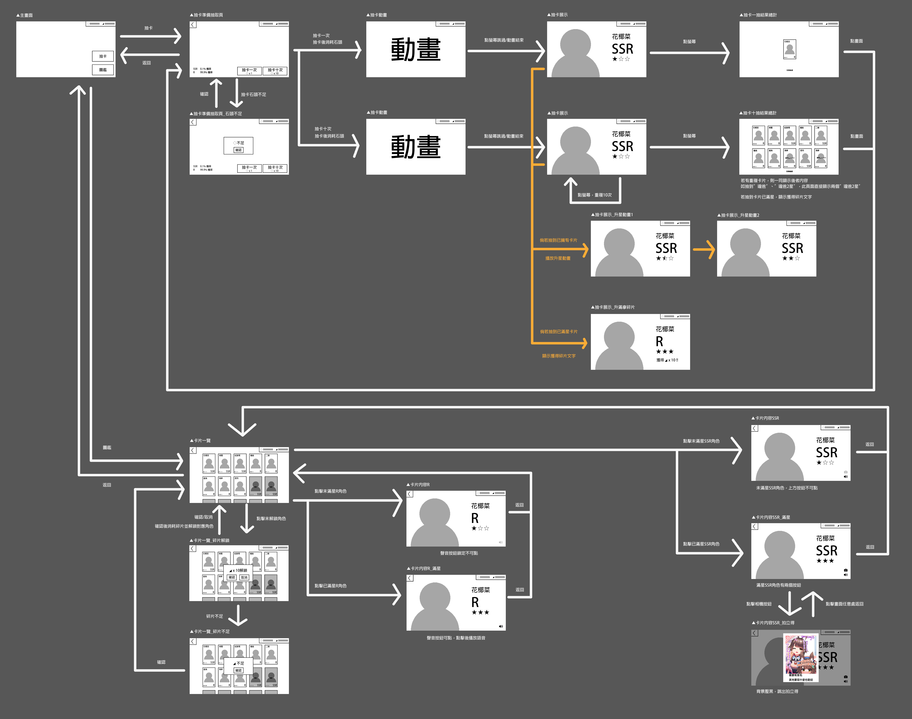</p>
<p>不過實際上最後的版本我還有自己加了一些東西</p>
<h3 id="影片播放功能"><a href="#影片播放功能" class="headerlink" title="影片播放功能"></a><strong>影片播放功能</strong></h3><p>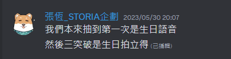</p>
<p>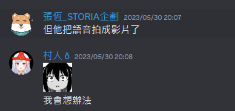</p>
<p>其實原始規格沒有這項功能，不過阿爾姿交錯檔案，為了讓焦阿巴(阿爾姿的粉絲)也能看到她最後的身影，所以就加了這個功能</p>
<h3 id="系統通知-營運送石功能"><a href="#系統通知-營運送石功能" class="headerlink" title="系統通知/營運送石功能"></a><strong>系統通知/營運送石功能</strong></h3><p>生日前一天才加上去的功能</p>
<p>原本企劃上只是要有手段能改機率或者送石頭</p>
<p>不過感覺還是要弄成系統公告會比較有感覺，所以就在倒數一天臨時補上了</p>
<p>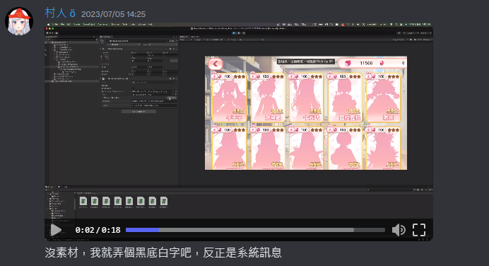</p>
<p>不過想不到最後起司團(祈菈的粉絲)斗內比想像中還要多，所以最後就沒真的需要用到送石的功能了</p>
<h3 id="SSR-差分"><a href="#SSR-差分" class="headerlink" title="SSR 差分"></a><strong>SSR 差分</strong></h3><p>原本 SSR 的背景是跟 R 卡一樣的，不過這樣抽出來的效果實在跟 R 卡差不多，所以自己去調了一下素材</p>
<p>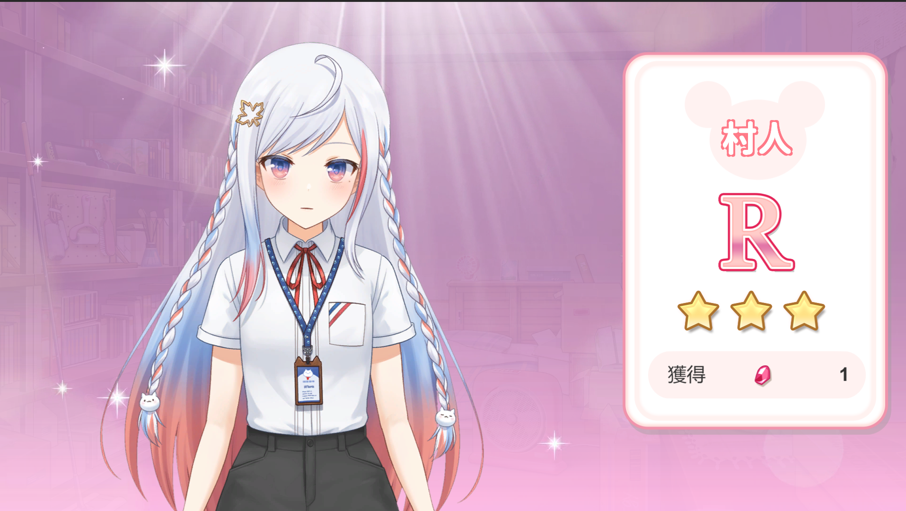</p>
<p>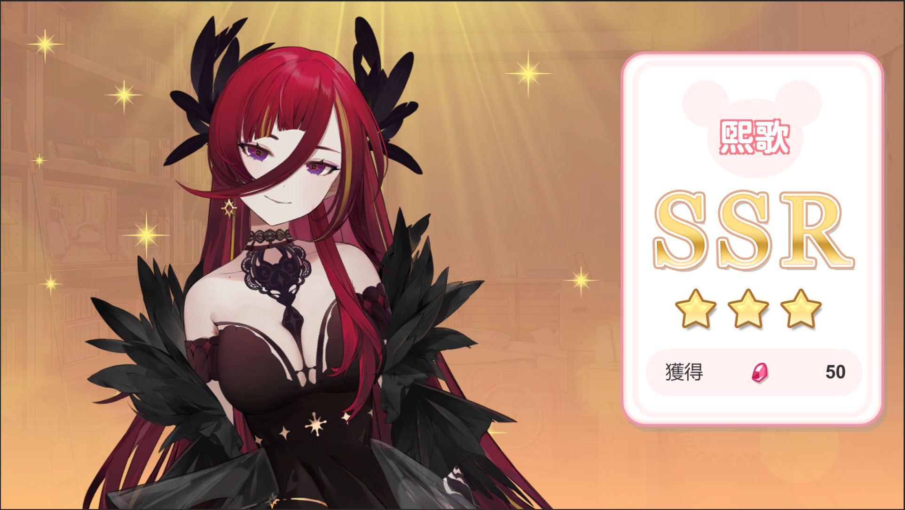</p>
<h3 id="程式面"><a href="#程式面" class="headerlink" title="程式面"></a><strong>程式面</strong></h3><p>開發使用的是 Unity <code>2021.3.22.f1</code></p>
<p>為了加速製作用了以下套件</p>
<ul>
<li><a target="_blank" rel="noopener" href="https://github.com/jilleJr/Newtonsoft.Json-for-Unity">NewtonSoft.Json</a> (Json 處理套件， Unity 原生的太難用了！)</li>
<li><a target="_blank" rel="noopener" href="http://dotween.demigiant.com/">DoTween</a> (動畫處理套件)</li>
<li><a target="_blank" rel="noopener" href="https://github.com/neuecc/UniRx">UniRx</a> (ReactiveX for Unity)</li>
<li><a target="_blank" rel="noopener" href="https://github.com/Cysharp/UniTask">UniTask</a> (Async/Await for Unity)</li>
<li><a target="_blank" rel="noopener" href="https://github.com/jeffreylanters/unity-web-requests">Unity Web Request</a> (Http Request for Unity，Unity 原生的不好用)</li>
<li><a target="_blank" rel="noopener" href="https://odininspector.com/">Odin Inspector</a> (Unity Inspector 的擴充套件，可以客製化 Unity 編輯器)</li>
</ul>
<p>由於功能上有需要能夠拉到觀眾的即時贊助資料(SuperChat / 綠界)轉換成抽卡的鑽石，幸好 Squarelive 有對應的 WEB API ，只要帶一些認證資料就可以取得對應的資料，我可以專注在遊戲流程的開發上</p>
<p>然後，為了實現後台操作機率，我們還要有一個伺服器來負責計算抽卡結果並回傳資料，而且系統的即時通知也需要透過伺服器來傳遞過來</p>
<p>為了架設這些東西我需要架設伺服器，並且寫一個後端程式來達成上述的功能…嗎？</p>
<p><strong>並不用！</strong></p>
<p>為了實現客家精神，我決定 0 成本達成以上功能</p>
<p>整體架構如下</p>
<ul>
<li>前端(Unity)自行計算抽卡結果</li>
<li>前端(Unity)定時去向 Squarelive API 取得贊助資料，並且根據異動的資料更新鑽石數量</li>
<li>前端(Unity)定時去拉取 <strong>雲端上的設定檔</strong> 根據異動來更新抽卡機率、系統通知、鑽石數量</li>
</ul>
<p>至於雲端上的設定檔，實現的機制是透過 Github 上面的靜態網站託管服務 <strong>Github Pages</strong> 來實現</p>
<p></p>
<p>設定檔放在 Repo 底下透過 <strong>Github Action</strong> 來自動更新 Github Pages </p>
<p>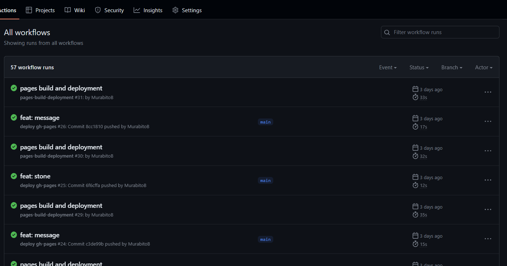</p>
<p>這些都架好後，只要在直播當天更新設定檔，並且 push 到 Repo 上，祈菈那邊的機率也能夠即時的更新，不過整體大約會有一分鐘左右的延遲<br>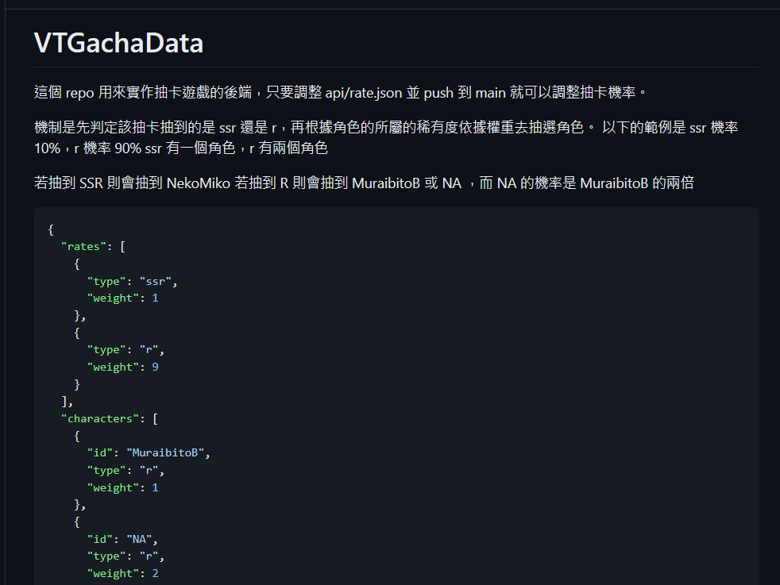</p>
<h2 id="製作組迷因集錦"><a href="#製作組迷因集錦" class="headerlink" title="製作組迷因集錦"></a><strong>製作組迷因集錦</strong></h2><h3 id="柴闆在祈菈看的到頻道發了徵集素材的貼文"><a href="#柴闆在祈菈看的到頻道發了徵集素材的貼文" class="headerlink" title="柴闆在祈菈看的到頻道發了徵集素材的貼文"></a><strong>柴闆在祈菈看的到頻道發了徵集素材的貼文</strong></h3><p>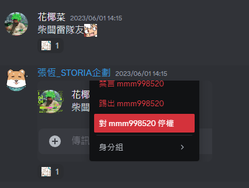</p>
<h3 id="村人醜一"><a href="#村人醜一" class="headerlink" title="村人醜一"></a><strong>村人醜一</strong></h3><p>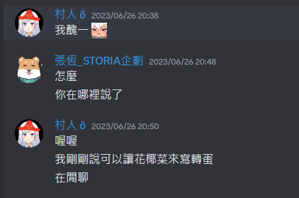</p>
<h3 id="柴闆以為的-UI-動畫-vs-實際上的-UI-動畫"><a href="#柴闆以為的-UI-動畫-vs-實際上的-UI-動畫" class="headerlink" title="柴闆以為的 UI 動畫 vs 實際上的 UI 動畫"></a><strong>柴闆以為的 UI 動畫 vs 實際上的 UI 動畫</strong></h3><p>柴闆以為抽卡特效，轉場的 UI 都可以給 UI 自己處理，殊不知最後執行的是工程師</p>
<p>柴闆以為<br>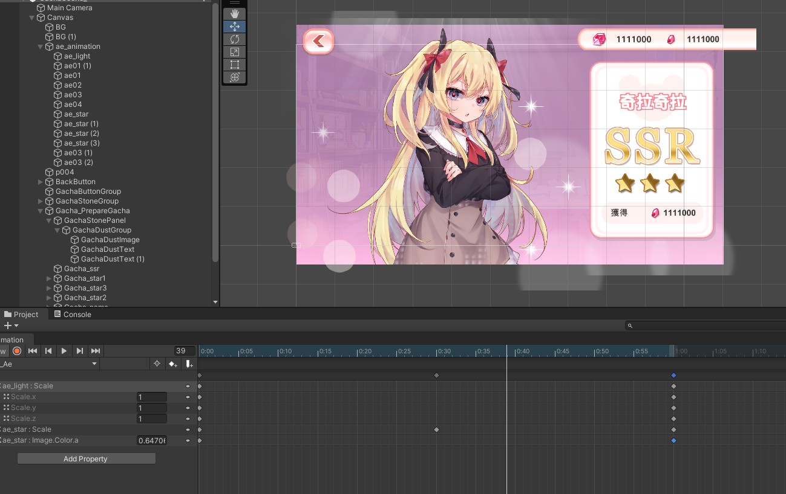 </p>
<p>實際上<br>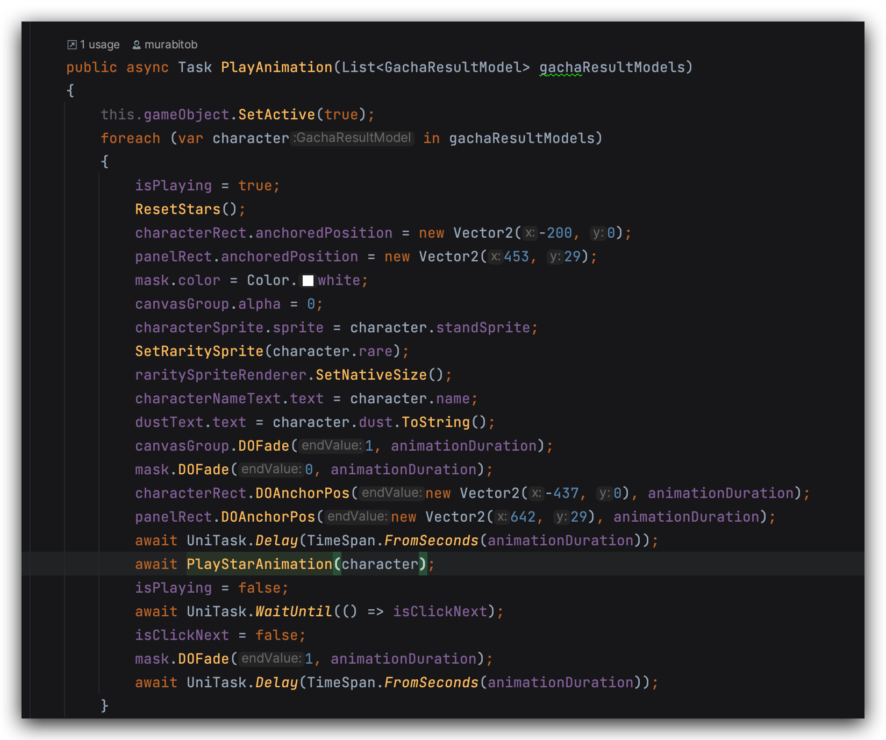</p>
<h2 id="結語"><a href="#結語" class="headerlink" title="結語"></a><strong>結語</strong></h2><p>有很多想做的功能最後礙於時間沒有做上去</p>
<ul>
<li>抽卡跳過功能</li>
<li>使用碎片升星已經抽過的角色</li>
<li>增強 SSR 演出，例如 SSR 抽出來前先跑一段角色專屬小文字，EX: 不要叫我傲魔魔！</li>
<li>活動專屬斗內頁面，希望做的像手遊課金的畫面</li>
</ul>
<p>作為一名網頁前端工程師，遊戲開發的技能基本停留在大學畢業的程度就幾乎沒有再增長，還好這次的遊戲內容還在我能夠應付的程度，整個直播的過程我也玩得很開心，希望明年也會有更多有趣的企劃能夠參與！</p>

        </div>

    </div>

    

    

    

    

    

    
<nav class="article-nav">
  
    <a href="/post/ckad.html" id="article-nav-newer" class="article-nav-link-wrap">
      <div class="article-nav-caption">下一篇</div>
      <div class="article-nav-title">
        
          2024 CKAD 心得
        
      </div>
    </a>
  
  
    <a href="/post/angular-httpinterceptor.html" id="article-nav-older" class="article-nav-link-wrap">
      <div class="article-nav-caption">上一篇</div>
      <div class="article-nav-title">Angular 初探 HttpInterceptor</div>
    </a>
  
</nav>


    <section class="share">
        <div class="share-title">分享</div>
        <a class="share-item" target="_blank"
            href="https://twitter.com/share?text=Squarelive 轉蛋遊戲製作心得 - MurabitoB'Blog&url=https%3A%2F%2Fmurabitob.github.io%2Fpost%2F2023-07-06-vt-gacha.html">
            <ion-icon name="logo-twitter"></ion-icon>
        </a>
        <a class="share-item" target="_blank"
            href="https://www.facebook.com/sharer.php?title=Squarelive 轉蛋遊戲製作心得 - MurabitoB'Blog&u=https%3A%2F%2Fmurabitob.github.io%2Fpost%2F2023-07-06-vt-gacha.html">
            <ion-icon name="logo-facebook"></ion-icon>
        </a>
        <!-- <a class="share-item" target="_blank"
            href="https://service.weibo.com/share/share.php?title=Squarelive 轉蛋遊戲製作心得 - MurabitoB'Blog&url=https://murabitob.github.io/post/2023-07-06-vt-gacha.html&pic=">
            <div class="n-icon n-icon-weibo"></div>
        </a> -->
    </section>

</article>


<section class="comments">
    <div id="gitalk-container"></div>
</section>


<script src="//busuanzi.ibruce.info/busuanzi/2.3/busuanzi.pure.mini.js"></script>

</div>
                </section>
            </section>

            
            <aside class="sidebar ">
                


<div class="widget" id="widget">
    
      
  <div class="widget-wrap">
    <div class="widget-inner">
      <div class="toc post-toc-html"></div>
    </div>
  </div>

    
      
  <div class="widget-wrap widget-cate">
    <div class="widget-title"><span>Categories</span></div>
    <div class="widget-inner">
      <ul class="category-list"><li class="category-list-item"><a class="category-list-link" href="/categories/%E5%B9%B4%E5%BA%A6%E7%9B%AE%E6%A8%99/">年度目標</a></li><li class="category-list-item"><a class="category-list-link" href="/categories/%E7%A8%8B%E5%BC%8F%E9%96%8B%E7%99%BC/">程式開發</a></li><li class="category-list-item"><a class="category-list-link" href="/categories/%E8%AA%8D%E8%AD%89/">認證</a></li></ul>
    </div>
  </div>


    
      
  <div class="widget-wrap widget-tags">
    <div class="widget-title"><span>Tags</span></div>
    <div class="widget-inner">
      <ul class="tag-list" itemprop="keywords"><li class="tag-list-item"><a class="tag-list-link" href="/tags/Net-Core/" rel="tag">.Net Core</a></li><li class="tag-list-item"><a class="tag-list-link" href="/tags/Net-Framewrok/" rel="tag">.Net Framewrok</a></li><li class="tag-list-item"><a class="tag-list-link" href="/tags/Angular/" rel="tag">Angular</a></li><li class="tag-list-item"><a class="tag-list-link" href="/tags/Azure/" rel="tag">Azure</a></li><li class="tag-list-item"><a class="tag-list-link" href="/tags/Azure-Function/" rel="tag">Azure Function</a></li><li class="tag-list-item"><a class="tag-list-link" href="/tags/Dependency-Injection/" rel="tag">Dependency Injection</a></li><li class="tag-list-item"><a class="tag-list-link" href="/tags/Kubernetes/" rel="tag">Kubernetes</a></li><li class="tag-list-item"><a class="tag-list-link" href="/tags/Side-Project/" rel="tag">Side Project</a></li><li class="tag-list-item"><a class="tag-list-link" href="/tags/%E5%89%8D%E7%AB%AF/" rel="tag">前端</a></li><li class="tag-list-item"><a class="tag-list-link" href="/tags/%E5%AD%B8%E7%BF%92/" rel="tag">學習</a></li><li class="tag-list-item"><a class="tag-list-link" href="/tags/%E5%B7%A5%E4%BD%9C/" rel="tag">工作</a></li><li class="tag-list-item"><a class="tag-list-link" href="/tags/%E9%96%8B%E7%99%BC%E5%B7%A5%E5%85%B7/" rel="tag">開發工具</a></li></ul>
    </div>
  </div>


    
      
  <div class="widget-wrap widget-recent-posts">
    <div class="widget-title"><span>Recent Posts</span></div>
    <div class="widget-inner">
      <ul>
        
          <li>
            <a href="/post/ckad.html">2024 CKAD 心得</a>
          </li>
        
          <li>
            <a href="/post/2023-07-06-vt-gacha.html">Squarelive 轉蛋遊戲製作心得</a>
          </li>
        
          <li>
            <a href="/post/angular-httpinterceptor.html">Angular 初探 HttpInterceptor</a>
          </li>
        
          <li>
            <a href="/post/angular-custom-pipe.html">Angular 自定義 Pipe</a>
          </li>
        
          <li>
            <a href="/post/angular-reactive-form.html">Angular Reactive Form</a>
          </li>
        
      </ul>
    </div>
  </div>

    
      
  <div class="widget-wrap widget-archive">
    <div class="widget-title"><span>Archive</span></div>
    <div class="widget-inner">
      <ul class="archive-list"><li class="archive-list-item"><a class="archive-list-link" href="/archives/2024/">2024</a></li><li class="archive-list-item"><a class="archive-list-link" href="/archives/2023/">2023</a></li><li class="archive-list-item"><a class="archive-list-link" href="/archives/2022/">2022</a></li><li class="archive-list-item"><a class="archive-list-link" href="/archives/2021/">2021</a></li><li class="archive-list-item"><a class="archive-list-link" href="/archives/2020/">2020</a></li></ul>
    </div>
  </div>


    
</div>

<div id="backtop"><i class="icon icon-arrow-up"></i></div>
            </aside>
            
        </div>
    </div>

    <footer class="footer">
    <div class="footer-wave">
        <svg xmlns="http://www.w3.org/2000/svg" viewBox="0 0 1440 320"><path fill="#3c4859" fill-opacity="1" d="M0,160L60,181.3C120,203,240,245,360,240C480,235,600,181,720,186.7C840,192,960,256,1080,261.3C1200,267,1320,213,1380,186.7L1440,160L1440,320L1380,320C1320,320,1200,320,1080,320C960,320,840,320,720,320C600,320,480,320,360,320C240,320,120,320,60,320L0,320Z"></path></svg>
    </div>

    <!-- Please do not remove this -->
    <!-- 开源不易，请勿删除 -->
    <div class="footer-wrap">
        <div class="footer-inner"> 
            MurabitoB&#39;Blog &copy; 2024<br>
            Powered By Hexo · Theme By <a href="https://linhong.me/" target="_blank">Aomori</a> · <a href="https://github.com/lh1me/hexo-theme-aomori" target="_blank">Github</a>
        </div>
    </div>

</footer>

<script type="module" src="https://unpkg.com/ionicons@6.0.2/dist/ionicons/ionicons.esm.js"></script>


<script src="https://unpkg.com/gitalk/dist/gitalk.min.js"></script>


<script src="/dist/build.js?1690288261467.js"></script>


<script src="/dist/custom.js?1690288261467.js"></script>


<!-- Google Analytics-->
<script async src="https://www.googletagmanager.com/gtag/js?id=G-SXXLX5MR04"></script>
<script>
    window.dataLayer = window.dataLayer || [];
    function gtag() { dataLayer.push(arguments); }
    gtag('js', new Date());
    gtag('config', 'G-SXXLX5MR04');
</script>


</body>

</html>